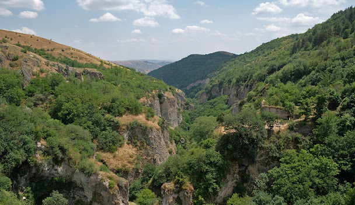
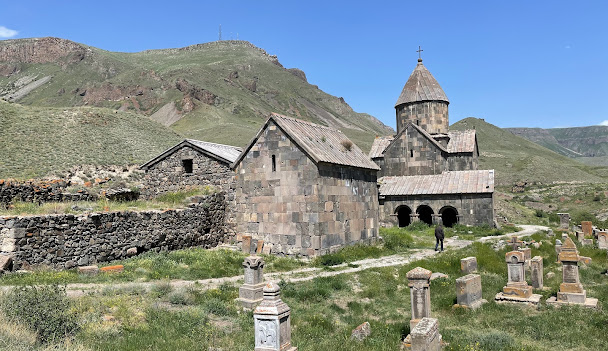

Սյունիք
Սյունիքի մարզ, մարզի կարգավիճակ ունեցող վարչական միավոր Հայաստանի ծայր հարավում։ Հյուսիսում սահմանակից է Վայոց ձորի մարզին, հարավում՝ Իրանի Իսլամական Հանրապետության Արևելյան Ադրբեջան նահանգին, արևմուտքից՝ Ադրբեջանի Հանրապետության կազմում ընդգրկված Նախիջևանի ԻՀ-ին, իսկ արևելքից՝ Արցախի Հանրապետությանը
Անվանում
Ժամանակակից Սյունիքի մարզի տարածքը կրում է պատմական Հայաստանի նույնանուն նահանգի անվանումը։ Պատմահայր Մովսես Խորենացու հաղորդումների համաձայն՝ Սյունիքի անվանադիր նախնին Սիսակ նահապետն է՝ Հայկի թոռն ու Գեղամի որդին։ Ամերիկահայ գիտնական Ռոբերտ Հյուսենը, սակայն, հակադրվում է այս տեսակետին և համարում, որ Սյունիքի անվանումը Սիսակի հետ կապված չէ։ Պատմաբան Արմեն Պետրոսյանը «Սյունիք» անվանումը կապում է Վանի թագավորության դիցարանի արևի աստծո՝ Շիվինիի (Սիվինիի) հետ։ Այս տեսակետի հիմքում, ի թիվս այլնի, ընկած է պատմական Սյունիքի տարածքում արևի հետ կապված տեղանունների բազմաթիվ լինելու հանգամանքը։ Տարբեր ժամանակներում Սյունիքը հիշատակվել է նաև Սյունիա, Սիսական, Սիվնիեթի, Զանգաձոր, Զանգեզուր և այլ անվանումներով։
Պատմություն
Պատմականորեն Սյունիքը եղել է Մեծ Հայքի 15 նահանգներից մեկը, որն էլ իր հերթին վարչականորեն բաժանված է եղել 12 գավառների. Երնջակ, Ճահուկ, Վայոց ձոր, Գեղարքունիք, Սոթք, Աղահեճք, Ծղուկք,Հաբանդ, Բաղք, Ձորք, Արևիք, Կովսական։ Ներկայիս Սյունիքի մարզը, սակայն, ներառում է պատմական Սյունյաց նահանգի տարածքի մի մասը։
 